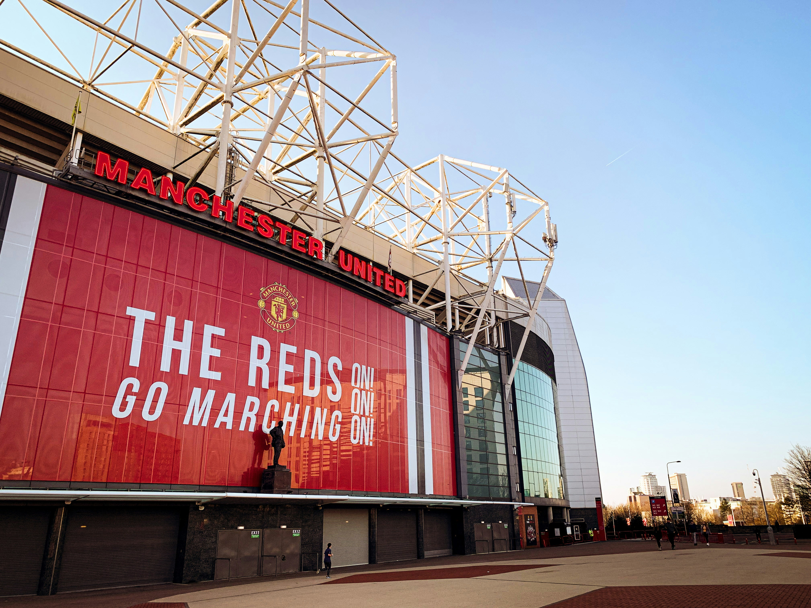
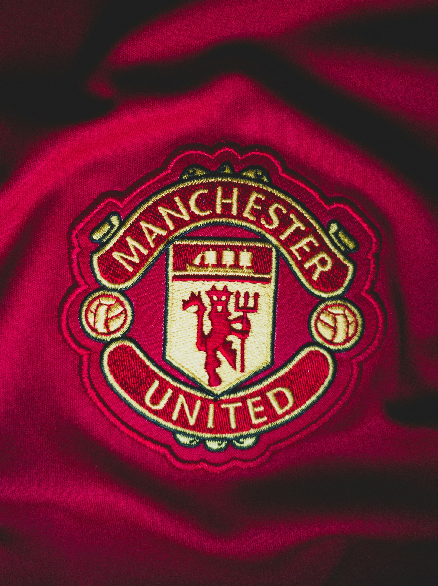
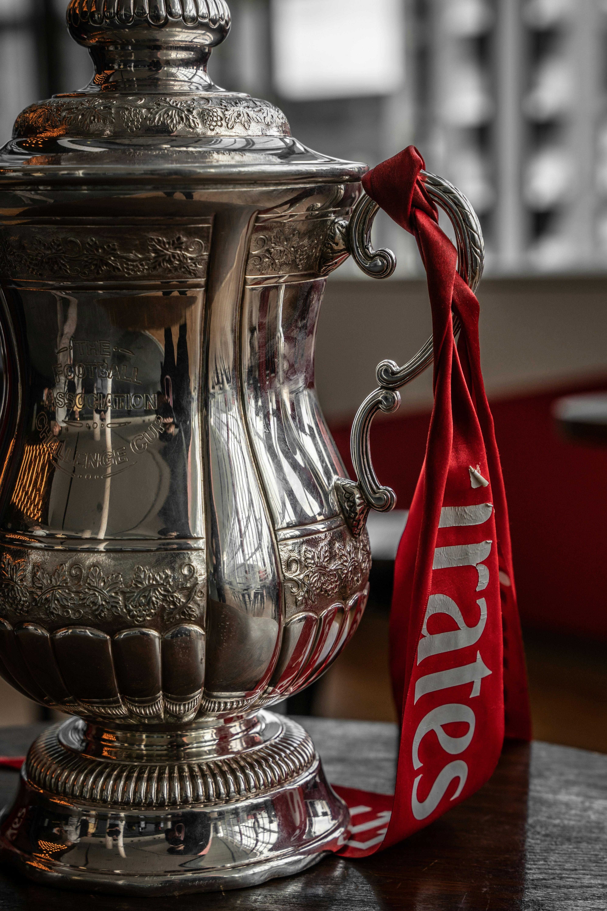
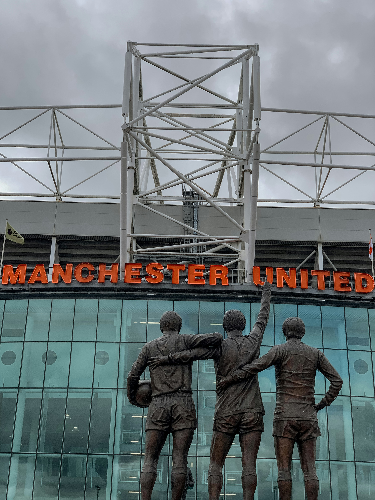
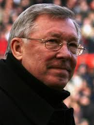

Manchester United is a football club that play in the Premier League of England.
Their colors are red, black, and white. They play in Old Trafford, Manchester, England and
are nicknamed the Red Devils


The team's badge features its colors,
a ship symbolising the city's trading history, and its titular red devil

MUFC have won many trophies throughout its history.
20 League trophies, 13 FA cup trophies, 6 EFL trophies,
3 Champions League trophies, and 1 FIFA Club World Cup.

Playes like Ronaldo, Rooney, Beckham, Bruno Fernandez,
and Roy Keane have been lucky enough to play for this team.

Sir Alex Ferguson is United's and probably the worlds greatest coach.
He won 38 trophies at United, achieved a treble,
and had a 59% win rate with 895/1,500 games.
There is no room for criticism on the training field.
For a player and for any human being there is nothing better than hearing ‘well done’.
Those are the two best words ever invented in sports. You don’t need to use superlatives.